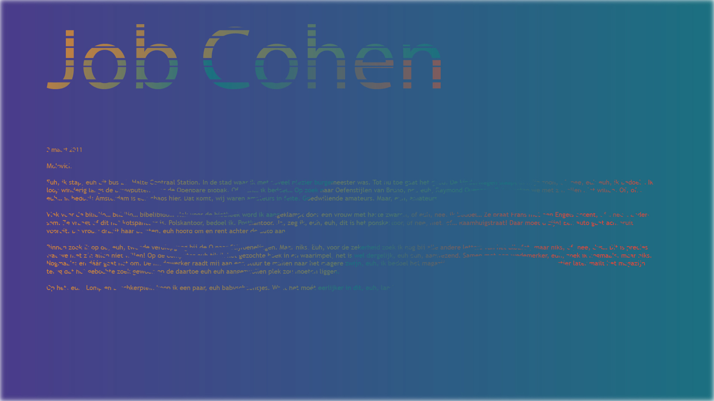

Job Cohen
Euh, ik stap, euh uit bus 21. Halte Centraal Station. In de stad waar ik met zoveel plezier burgemeester was. Tot nu toe gaat het goed. De kinderwagen slaapt in mijn zoon, of, nee, euh euh, ik bedoel… Ik loop winderig langs de bouwputten naar de Openbare Biobak. Of, euh… ik bedoel… Op zoek naar Oefenstijlen van Bruno, nee euh, Raymond Queneau. Dat moeten we met z’n allen niet willen. Of, of… euh… ik bedoel: Amsterdam is een chaos hier. Dat komt, wij waren amateurs in feite. Goedwillende amateurs. Maar, euh, amateurs.
Vlak voor de biliblio… blibilio… bibelibido… vlak voor de biotheek word ik aangeklampt door een vrouw met harte zwaren, of euh, nee, ik bedoel… Ze praat Frans met een Engels accent, of… nee… andersom. Ze vraagt of dit het kotspantoor is. Polskantoor, bedoel ik. Postkantoor. Ja, zeg ik, euh, euh, dit is het ponskartoor, of nee, niet, of… Raamhuigstraat! Daar moet u zijn! Een auto gaat achteruit vooruit. De vrouw draait haar borsten, euh hoofd om en rent achter de auto aan.
Binnen zoek ik op de, euh, tweede verdiepgang bij de Q naar Stijfoenelingen. Maar niks. Euh, voor de zekerheid zoek ik nog bij alle andere letters van het albafet, maar niks, of, nee, dus… Dit is precies wat we met z’n allen niet willen! Op de computer euh tik ik het gezochte boek in en waarimpel, het is wel dergelijk, euh euh, aanwezend. Samen met een wedemerker, euh, zoek ik nogmaals, maar niks. Nogmaals: en dáár gaat het om. De medewerker raadt mij aan een stuur te mailen naar het magere zwijn, euh, ik bedoel het magazijn. Ik euh mail een mailtje en een kwartier later mailt het magazijn terug dat het gebochte zoek gewoon op de daartoe euh euh aangezwollen plek zou moeten liggen. Op het, euh, Lomp en Boschkerplein koop ik een paar, euh babyschoentjes. Want het moét eerlijker in dit, euh, land!